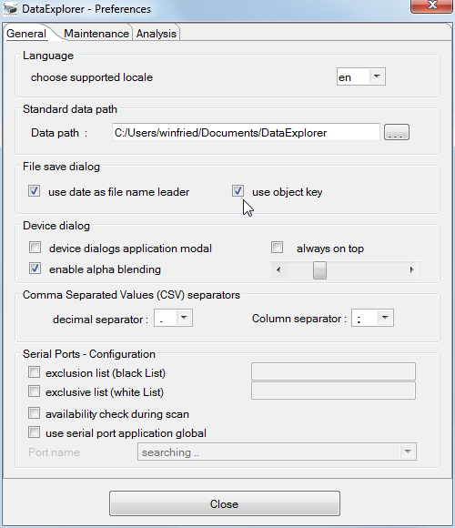
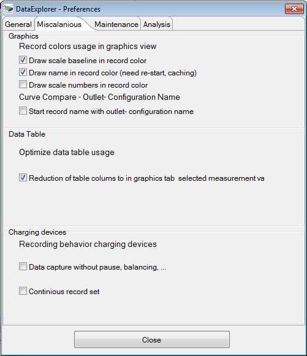

The Preferences Dialog
The settings dialog is used to configure:
- the language to be used
- the data path, where the application is locking for and placing the device specific log data files and file links.
- the file save dialog might be use the current date and/or object name as leader of the file name. This will help to find files.
- behavior of the device dialogs. A primary modal behavior is some times not handy, if some adjustments are the place in parallel while gathering data. Some times this cost more effort while programming this.
- decimal separator and list separator characters. This might
be different then the character used from system locale to work together with the spread sheet programs.
This adjustment is used for import/export of CSV files, but has no influence while importing CSV2SerialAdapter Data Format files.

- using black-list or white-list configuration it is possible to configure according personal problematic ports. This configuration is also valid for the device selection dialog, where device individual ports are selected. Configure the black-list will ignore ports declared. On the other hand the white-list will exclusive use the configured ports. Using the white list it is possible to miss ports dynamically configured by the system.
- while it scans for available serial ports and updates the results delayed. The delay can be reduced on slow systems by switching off the availability check. If this is the case used ports are displayed too which might not be used in future. At UNIX based systems this is not relevant. This adjustment reflect also to the device selection dialog which also scans for available serial ports.
- if system wide only one serial port is available it is possible to configure a global serial port usage, but in most cases the single available port will be found automatically. Activating this check box will start the port update scan.
The "Maintenance" tabulator contains some buttons to refresh or remove some application related items. Pushing the buttons will "Create Desktop Launcher" or "Remove Desktop Launcher" will create or remove such icons. The other two buttons enable the DataExplorer MIME type registration to associate the file endings *.osd and *.lov or remove this registration.

The button "Create Link Files" will scan all data files under the configured folder and create all missing object directories as well as the associating link files. The button "Clean Link File" will delete object related link files but not the object description files nor the object related directories. This function helps to move data files to different system/platform or for backup purpose. Using the button "Resource Consumption" will print the operating system handle usage status to the trace.log files. Pushing the button "Clean Settings" the DataExplorer gets configures to remove all application configuration entries from the system while exiting. This includes Starter-Icon and other system entries and enable clean application removal or re-starting the application initial configuration.
Using the analyze tab only adjustments for problem analysis can be found. After a program failure function a trace log entry should appear which may help to find the reason for it appearance. Pay attention, modifying trace log level away from INFO will result in slowed down execution an may lead in unknown side effects. So adjust this values using this knowledge. The adjustments are scaled in detail level,
- SEVERE writes only program execution errors,
- WARNING writing errors and warnings, (default)
- TIME writing errors, warnings and time relevant log statements
- INFO writing errors, warnings and some informational,
- FINE writing all errors warnings and informational, in addition traces of the level fine,
- FINER writing more than FINE
- FINEST writing more than FINER
The below described part allows to configure the log level class based. To keep the log file content small do not adjust the log level above FINE. Otherwise the amount of log statements is very high.
- the global setting of the "trace log" level, is in normal the level INFO
- graphical user interface, here all statements are included called during main window execution
- devices, all statements called during device relevant execution
- data model, all executions involved by the data model itself
- utility functions, all the helper functions, drawing curves, calculate check sum, etc.
- file I/O, function calls involved in file input/output
- serial I/O, will used a memory logger above the level INFO to archive a low performance impact. As logical consequence the memory usage of the application is higher as before. It might be required to start the application using "java -jar -Xmx512m DataExplorer.jar" where the maximal memory usage is limited to 512 Mbyte.

The class based log level allows to set a logging level for selected class(es) which reduce the amount of trace statements and helps analyzing class centric. A context menu enables the log level selection. Closing the settings dialog will activate the adjusted trace level.
In every case only three level of trace log files are written with a limited size. The files in this rolled approach will over write after a certain amount of statements.
Hint: In case of error please have a look into the trace log files this will give help indicators to fix the problem (refer to Used Directories).